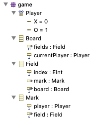

Using EMF to model the game state
This tutorial expects that you are familiar with modelling in EMF. If you are not, you might want to look at the EMF Tutorial first.
Our model for the game state defines an enumeration type for players and classes for the board, fields and their marks.

Fields are contained in boards and marks are optional and contained in fields.
We also specify backwards (or upwards) so called container references for contained classes.
These can be used to access the container in a type safe way.
You can investigate the model in detail by looking at model/game.ecore using the Eclipse Modelling Tools.
Note that the Board class defines an attribute for the current player.
This attribute stores which player makes the next move and is updated after each move.
For convenience, the Field class defines an attribute index which is the index of a field in the list of fields stored with boards. The mark reference in the Field class can be null.
If it is not, the player hwo marked a field is stored in the player attribute of the Mark class.
We can generate Java code for this model using the corresponding file model/game.genmodel. This will produce packages game, game.impl and game.util in the src folder of our project. The game package contains interfaces for every modelled type and a class GameFactory to create corresponding instances.
Next, we will use the provided factory to define static constructors.